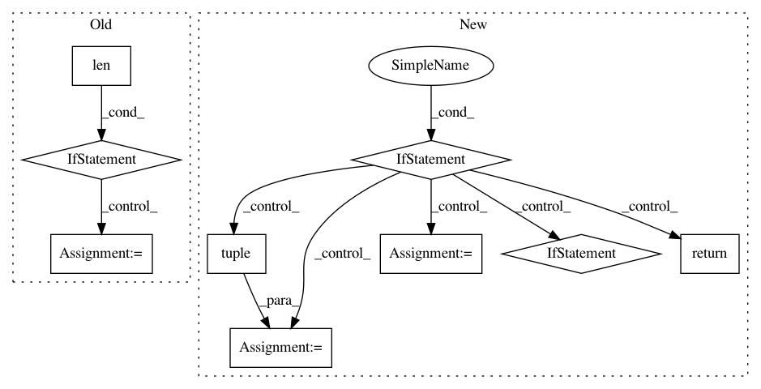

b7efa1f037f8adc94a28fc421dd7934b63b3043e,geomstats/_backend/numpy/__init__.py,,assignment,#Any#Any#Any#Any#,121
Before Change
for nb_index, index in enumerate(indices):
if not isinstance(index, tuple):
index = (index,)
if len(index) < len(shape(x)):
for n_axis in range(shape(x)[axis]):
extended_index = index[:axis] + (n_axis,) + index[axis:]
x_new[extended_index] = values[nb_index]
else:
x_new[index] = values[nb_index]
return x_new
def assignment_by_sum(x, values, indices, axis=0):
After Change
x_new = copy(x)
use_vectorization = hasattr(indices, "__len__") and len(indices) < ndim(x)
if _is_boolean(x):
x_new[indices] = values
return x_new
zip_indices = _is_iterable(indices) and _is_iterable(indices[0])
if zip_indices:
indices = tuple(zip(*indices))
if not use_vectorization:
x_new[indices] = values
else:
indices = tuple(
list(indices[:axis]) + [slice(None)] + list(indices[axis:]))
x_new[indices] = values
return x_new
In pattern: SUPERPATTERN
Frequency: 3
Non-data size: 9
Instances
Project Name: geomstats/geomstats
Commit Name: b7efa1f037f8adc94a28fc421dd7934b63b3043e
Time: 2020-04-22
Author: 62605255+pchauchat@users.noreply.github.com
File Name: geomstats/_backend/numpy/__init__.py
Class Name:
Method Name: assignment
Project Name: deepgram/kur
Commit Name: 35ed48386992d824973d8ed39cfa299614b7cd34
Time: 2017-02-28
Author: ajsyp@syptech.net
File Name: kur/loggers/binary_logger.py
Class Name: BinaryLogger
Method Name: load_statistic
Project Name: cornellius-gp/gpytorch
Commit Name: 303217b34070dc47a86622b62764098999b0d7f5
Time: 2018-12-12
Author: gpleiss@gmail.com
File Name: gpytorch/lazy/lazy_tensor.py
Class Name: LazyTensor
Method Name: _quad_form_derivative